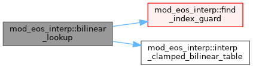

|
MPI-AMRVAC 3.2
The MPI - Adaptive Mesh Refinement - Versatile Advection Code (development version)
|
Interpolation kernels for the EoS tables (pure math; no EoS state). More...
Functions/Subroutines | |
| pure integer function, public | find_index_guard (nodes, n, val, guard, m, scale_m) |
| Fast adaptive index lookup. Returns the smallest 1-based ii such that nodes(ii) >= val. Falls back to binary search if the guard array is not built (M = 0). Equivalent in result to find_index_bsearch but O(1) when the guard is present. | |
| pure double precision function, public | interp_clamped_bilinear_table (vary, varx, table, nx, ny, vmin_y, vmax_y, vmin_x, vmax_x) |
| pure double precision function, public | bicubic_lookup (var1, var2, tc) |
| Dispatch wrapper: bicubic lookup that branches on the table's is_uniform flag. Hides the uniform-vs-adaptive distinction from call sites – they pass (var1, var2, eos%. | |
| pure double precision function, public | bilinear_lookup (var1, var2, tc) |
| Dispatch wrapper: bilinear lookup that branches on is_uniform. | |
| subroutine, public | interp_pchip_interleaved (vary, varx, table_il, nq, nx, ny, vmin_y, vmax_y, vmin_x, vmax_x, results) |
| Interleaved PCHIP: evaluate N quantities at the same (vary, varx) point. Table layout: table_il(nq, ny, nx) where nq quantities share the same grid. All nq values at each grid point are contiguous in memory (cache-optimal). | |
| subroutine, public | interp_pchip_interleaved_nu (vary, varx, table_il, nq, nx, ny, var1_nodes, var2_nodes, guard_1, m_1, scale_1, guard_2, m_2, scale_2, results) |
Adaptive-grid sibling of interp_pchip_interleaved. Replaces the affine index calculation (x - x_min) * step_inv with binary searches on the explicit node arrays var{1,2}_nodes (Q axis-1 binary searches: O(log_2 N) comparisons each, total ~16 cmps for N = 256). The PCHIP kernel itself is unchanged: it operates on the local 4-tuple of values regardless of grid spacing. The stride-1 access pattern over the q-slot dimension is preserved, so cache behaviour matches the uniform variant for the inner kernel. | |
| subroutine, public | precompute_step_inv (tc) |
Interpolation kernels for the EoS tables (pure math; no EoS state).
Every routine operates on an eos_table_container passed by the caller: bicubic_lookup / bilinear_lookup – dispatch on tcis_uniform and return the interpolated value (monotone bicubic PCHIP, or bilinear). interp_pchip_interleaved(_nu) – evaluate several quantities sharing one (nH, eint/nH) grid in a single cache-friendly pass. find_index_guard – O(1) bracket lookup on a non-uniform axis (falls back to binary search if no guard array is built). Uniform grids use an affine index; non-uniform (_nu) grids use explicit node arrays. The PCHIP kernel is monotone (no overshoot on each 1D slice).
| pure double precision function, public mod_eos_interp::bicubic_lookup | ( | double precision, intent(in) | var1, |
| double precision, intent(in) | var2, | ||
| type(eos_table_container), intent(in) | tc | ||
| ) |
Dispatch wrapper: bicubic lookup that branches on the table's is_uniform flag. Hides the uniform-vs-adaptive distinction from call sites – they pass (var1, var2, eos%.
and get the interpolated value, regardless of grid type.
Existing uniform routine signature has (vary, varx, ...) where vary is the FIRST table axis (var1). Caller var1 -> vary, caller var2 -> varx. The existing argument ordering passes dim1, dim2 and the var1 / var2 bounds; the routine's internal "y/x" labelling is consistent with that ordering for square tables (which all our tables are).
Definition at line 220 of file mod_eos_interp.t.
| pure double precision function, public mod_eos_interp::bilinear_lookup | ( | double precision, intent(in) | var1, |
| double precision, intent(in) | var2, | ||
| type(eos_table_container), intent(in) | tc | ||
| ) |
Dispatch wrapper: bilinear lookup that branches on is_uniform.
Definition at line 242 of file mod_eos_interp.t.

| pure integer function, public mod_eos_interp::find_index_guard | ( | double precision, dimension(n), intent(in) | nodes, |
| integer, intent(in) | n, | ||
| double precision, intent(in) | val, | ||
| integer, dimension(m), intent(in) | guard, | ||
| integer, intent(in) | m, | ||
| double precision, intent(in) | scale_m | ||
| ) |
Fast adaptive index lookup. Returns the smallest 1-based ii such that nodes(ii) >= val. Falls back to binary search if the guard array is not built (M = 0). Equivalent in result to find_index_bsearch but O(1) when the guard is present.
Definition at line 83 of file mod_eos_interp.t.
| pure double precision function, public mod_eos_interp::interp_clamped_bilinear_table | ( | double precision, intent(in) | vary, |
| double precision, intent(in) | varx, | ||
| double precision, dimension(ny, nx), intent(in) | table, | ||
| integer, intent(in) | nx, | ||
| integer, intent(in) | ny, | ||
| double precision, intent(in) | vmin_y, | ||
| double precision, intent(in) | vmax_y, | ||
| double precision, intent(in) | vmin_x, | ||
| double precision, intent(in) | vmax_x | ||
| ) |
fractional positions
clamp to [0, nx-1] and [0, ny-1]
Definition at line 100 of file mod_eos_interp.t.
| subroutine, public mod_eos_interp::interp_pchip_interleaved | ( | double precision, intent(in) | vary, |
| double precision, intent(in) | varx, | ||
| double precision, dimension(nq, ny, nx), intent(in) | table_il, | ||
| integer, intent(in) | nq, | ||
| integer, intent(in) | nx, | ||
| integer, intent(in) | ny, | ||
| double precision, intent(in) | vmin_y, | ||
| double precision, intent(in) | vmax_y, | ||
| double precision, intent(in) | vmin_x, | ||
| double precision, intent(in) | vmax_x, | ||
| double precision, dimension(nq), intent(out) | results | ||
| ) |
Interleaved PCHIP: evaluate N quantities at the same (vary, varx) point. Table layout: table_il(nq, ny, nx) where nq quantities share the same grid. All nq values at each grid point are contiguous in memory (cache-optimal).
Definition at line 405 of file mod_eos_interp.t.
| subroutine, public mod_eos_interp::interp_pchip_interleaved_nu | ( | double precision, intent(in) | vary, |
| double precision, intent(in) | varx, | ||
| double precision, dimension(nq, ny, nx), intent(in) | table_il, | ||
| integer, intent(in) | nq, | ||
| integer, intent(in) | nx, | ||
| integer, intent(in) | ny, | ||
| double precision, dimension(ny), intent(in) | var1_nodes, | ||
| double precision, dimension(nx), intent(in) | var2_nodes, | ||
| integer, dimension(m_1), intent(in) | guard_1, | ||
| integer, intent(in) | m_1, | ||
| double precision, intent(in) | scale_1, | ||
| integer, dimension(m_2), intent(in) | guard_2, | ||
| integer, intent(in) | m_2, | ||
| double precision, intent(in) | scale_2, | ||
| double precision, dimension(nq), intent(out) | results | ||
| ) |
Adaptive-grid sibling of interp_pchip_interleaved. Replaces the affine index calculation (x - x_min) * step_inv with binary searches on the explicit node arrays var{1,2}_nodes (Q axis-1 binary searches: O(log_2 N) comparisons each, total ~16 cmps for N = 256). The PCHIP kernel itself is unchanged: it operates on the local 4-tuple of values regardless of grid spacing. The stride-1 access pattern over the q-slot dimension is preserved, so cache behaviour matches the uniform variant for the inner kernel.
Definition at line 469 of file mod_eos_interp.t.
| subroutine, public mod_eos_interp::precompute_step_inv | ( | type(eos_table_container), intent(inout) | tc | ) |
Definition at line 541 of file mod_eos_interp.t.